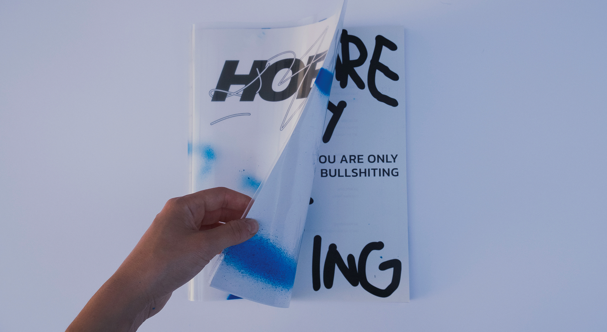
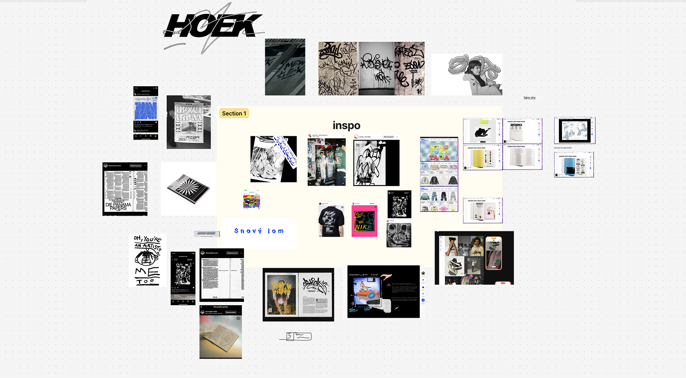
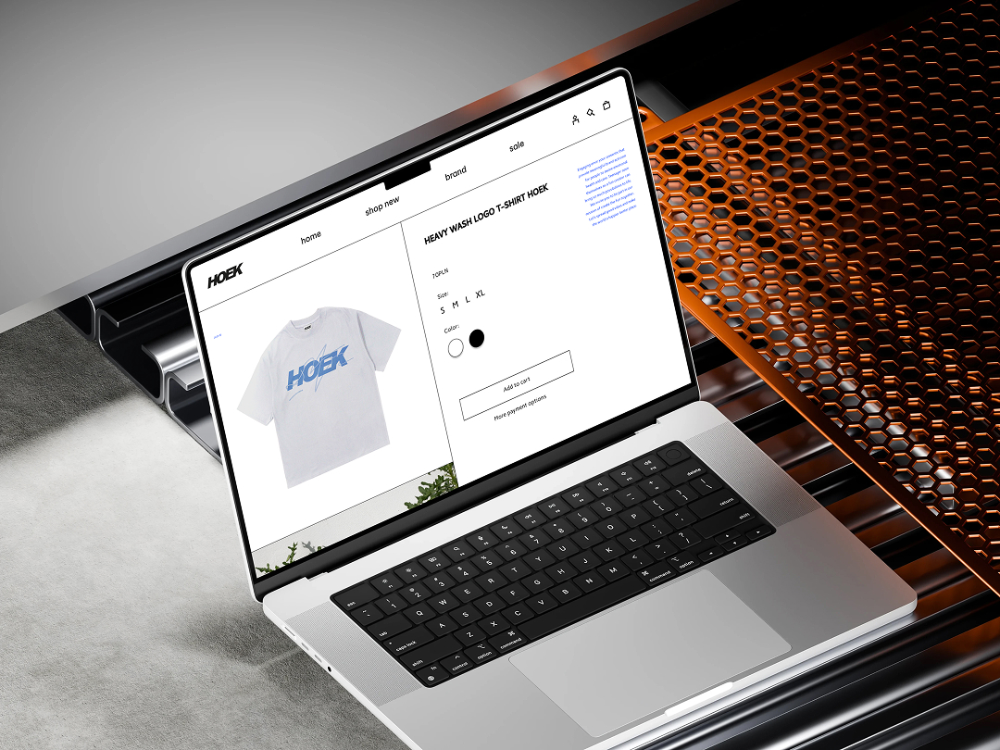
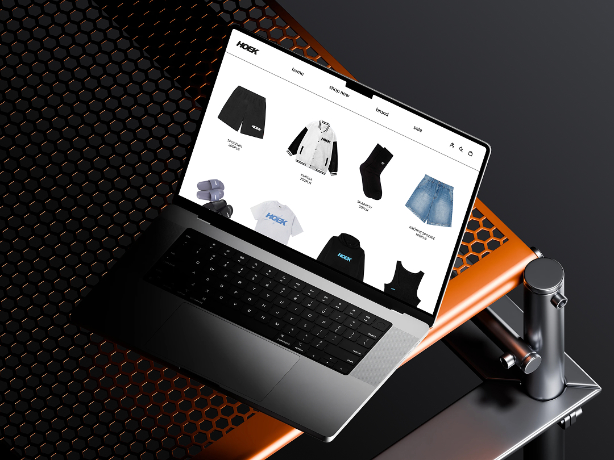
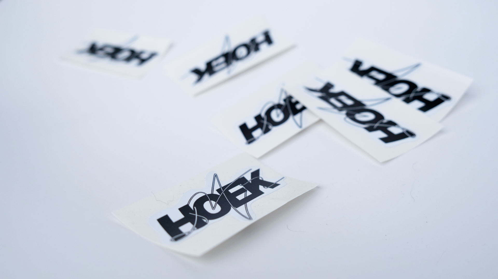
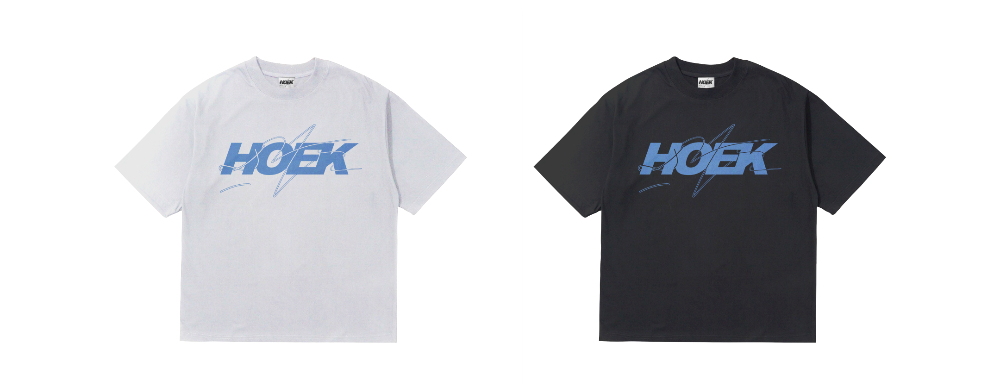
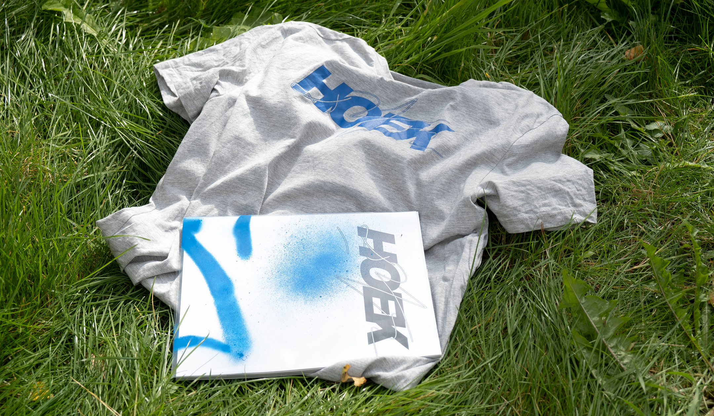
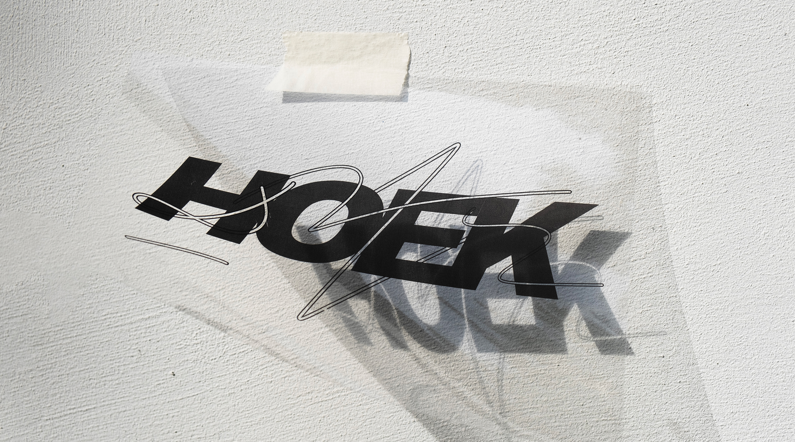

Comprehensive visual identity for the brand
Lifestyle magazine.
HOEK is an integrated project that combines urban narrative with street aesthetics, extending across various media: print, fashion, and web. It represents a modern approach to visual design, where the magazine becomes a cultural statement, the clothing acts as a carrier of identity, and the website serves as a digital archive and distribution platform.
The Challenge
A desire to create a brand that combines fashion with culture.
The Goal
To create a complete, cohesive visual identity that works effectively in both print and digital media.


I conducted my own interviews with a local painter and a girl who skateboards. Additionally, I incorporated excerpts from interviews from other sources (blogs, podcasts). These stories became the core of the magazine’s content, they added authenticity and showed that HOEK is not just an aesthetic, but real voices.

Moodboard
The moodboard was created as the starting point for the entire HOEK visual identity. It brought together photographs, textures, typography experiments, magazine spreads, street tags, skate culture references, details and underground zine aebrutalist architecturesthetics.

The website serves as a dedicated platform for selling the limited clothing collection inspired by the project's raw, urban aesthetic. It acts as a complement to the primary medium — the printed magazine.


What was created?
HOEK Magazine – a physical edition (cover hand-spray-painted) Website – a dedicated platform for selling a limited clothing collection T-shirts – a limited series of shirts featuring the HOEK logo and graphics Stickers – a sticker pack with logo variations Posters – a series of promotional and artistic posters.

The poster creation process was inspired by experimenting with a scanner. Instead of classic digital design, I put into the scanner physical elements: hand-drawn tags, cut pieces of paper. Intentionally I moved objects during scanning, lightly I lifted the cover in order to let in light, I applied layers multiple times and extremely I changed contrast. These raw scans became the base for the posters.
The T-shirts were made using screen printing. They were purchased second-hand and then screen-printed.



Outcomes
The project resulted in a cohesive multi-medium brand that bridges print culture and street fashion. I learned the power of authentic, hands-on elements (like hand-sprayed covers and real interviews) in building emotional connection.